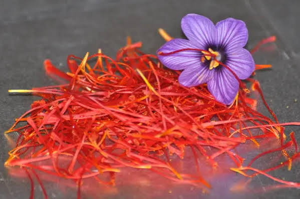

Fête du Safran
du
Quercy


⟹ Or Rouge du Quercy ⟸
Le safran est cultivé en Quercy depuis le Moyen Âge, sur les terres de Cajarc et de Saint-Chels, entre la vallée du Lot et les causses calcaires environnants. Commercialisée activement jusqu'à la Révolution française, cette épice précieuse a ensuite quasiment disparu de la région.

Il faut attendre le début du XXe siècle pour qu'un regain d'intérêt de quelques familles relance timidement la culture, avant qu'un véritable élan collectif ne s'organise à la fin des années 1990, lorsque des agriculteurs de la région de Cajarc décident de faire revivre ce savoir-faire ancestral.
C'est ainsi qu'est née l'association « Les Safraniers du Quercy », qui réunit aujourd'hui une cinquantaine de producteurs cultivant un peu plus d'un hectare de bulbes pour une production annuelle de 4 à 5 kilogrammes de safran, exclusivement sous forme de stigmates entiers séchés.
En 2011, Cajarc obtient le label Site Remarquable du Goût sous l'appellation « Cité Safran du Quercy », consacrant la renaissance réussie de cet « or rouge » que la Fête du Safran célèbre chaque année depuis maintenant plus d'un quart de siècle.
Contrairement aux grandes cultures céréalières, les safranières du Quercy occupent de petites parcelles, souvent de quelques ares seulement, nichées entre vallée du Lot et causses calcaires autour de Cajarc et de Saint-Chels.
Cette culture de niche, exigeante en main-d'œuvre et particulièrement chronophage au moment de la récolte, s'intègre naturellement dans les paysages agricoles diversifiés du Quercy, aux côtés des vergers de noyers et des vignes.
Les Safraniers du Quercy se sont engagés dès le début des années 2000 dans une démarche de reconnaissance officielle de leur production, à travers une demande d'indication géographique protégée, gage de la qualité exceptionnelle de leur épice.
Une production confidentielle : avec seulement 4 à 5 kilogrammes récoltés chaque année par la cinquantaine de producteurs, la filière reste fragile face à la demande et à la concurrence du safran importé.
Un travail manuel considérable : la cueillette et l'émondage, entièrement réalisés à la main, limitent les surfaces cultivables et rendent la production difficile à développer rapidement.
La reconnaissance à finaliser : la démarche d'indication géographique protégée, engagée depuis le début des années 2000, doit encore aboutir pour mieux protéger l'appellation « Safran du Quercy ».
Attirer de nouveaux producteurs : convaincre de nouvelles exploitations de se lancer dans cette culture exigeante reste essentiel pour pérenniser et développer la filière.
Rendez-vous chaque année l'avant-dernier week-end d'octobre à Cajarc, « Cité Safran du Quercy », pour la Fête du Safran organisée par l'association Les Safraniers du Quercy.
Le marché de producteurs permet d'acheter directement le safran et ses dérivés — salés, sucrés, apéritifs — ainsi que des créations artisanales à base de cette épice.
Les visites de safranières proposées par les producteurs font découvrir la culture du crocus sativus, de la plantation à la récolte.
Le salon des métiers d'art associé à la fête met également en valeur le savoir-faire des artisans lotois aux côtés des safraniers.
Programme détaillé disponible auprès de l'association Les Safraniers du Quercy et de l'Office de Tourisme Figeac — Vallées du Lot et du Célé.